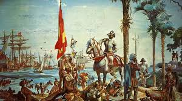
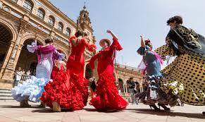
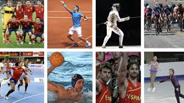

Home web page |
| Home | History | Places | Food | sports | contact |
  |
About Spain: |
Spain is a country in southwestern Europe, with its capital in Madrid. It is known for its cultural diversity, history, traditions, and gastronomy, and is one of the world's leading tourist destinations. |
|  |
Extra Data: |
Spain is one of the most visited countries in the world thanks to its diverse landscapes, historic cities, and pleasant climate. Tourism is fundamental to its economy and is particularly prominent in places like Madrid, Barcelona, Seville, and its coastal areas. Its culture is incredibly diverse, boasting internationally renowned traditions, festivals, music, and cuisine, as well as a significant historical and artistic heritage. |
|   |
Copy right 2026 Alonso, Christian, Diaz, Dario, Sanchez and Abascal © |